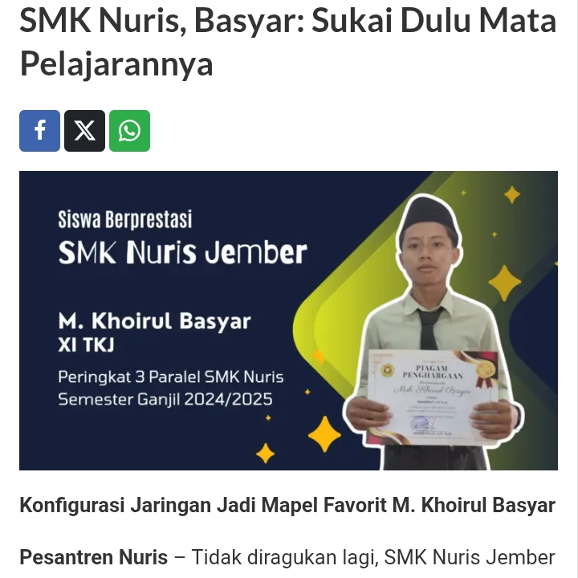
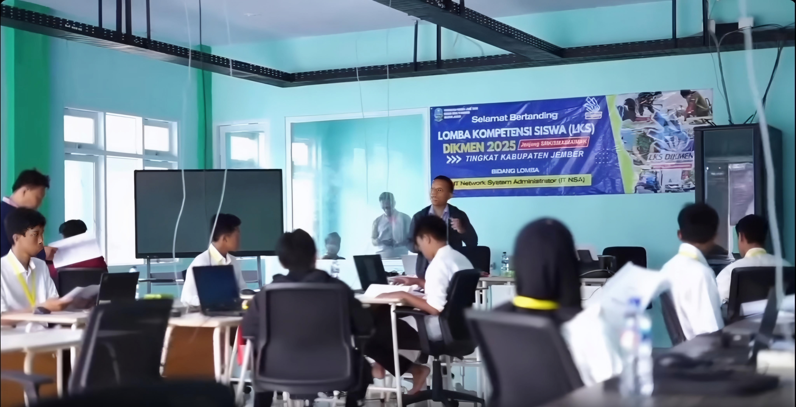
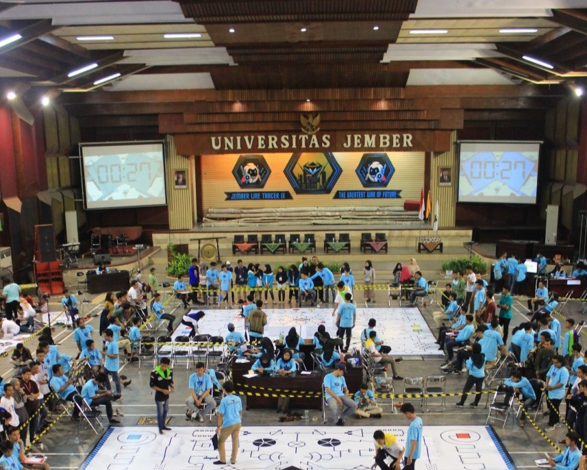
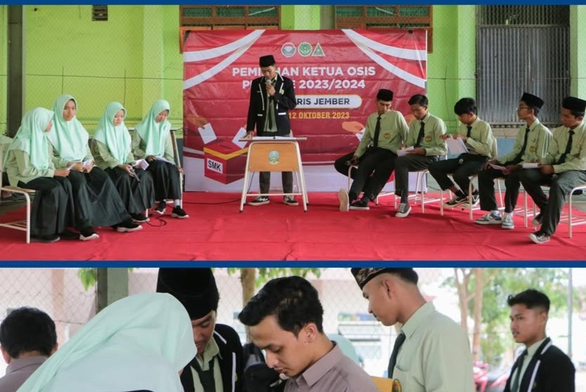

Show Me

🏆 Peringkat 3 Juara Paralel
Meraih peringkat 3 juara paralel di SMK Nuris Jember sebagai hasil dari konsistensi belajar dan kedisiplinan selama proses pembelajaran.
Kunjungi

🏅 5 Besar Lomba LKS ITNSA
Masuk 5 besar dalam kejuaraan LKS bidang IT Network System Administration (ITNSA) sebagai pengalaman kompetisi dan pengembangan kemampuan.
Kunjungi
🛠️ Teknisi Jaringan PKL – PT. Proxinet
Mengikuti kegiatan PKL sebagai teknisi jaringan di PT. Proxinet dan terlibat dalam berbagai aktivitas lapangan serta pendukung layanan jaringan.
Kunjungi

🤖 Lomba Robotika Line Follower – Universitas Jember
Mengikuti lomba robotika line follower yang diselenggarakan di Universitas Jember sebagai pengalaman pengembangan minat dan kemampuan di bidang teknologi.
Kunjungi

📋 Pengurus OSIS – Sekretaris
Menjadi anggota OSIS dan menjabat sebagai sekretaris dalam mendukung kegiatan organisasi dan administrasi sekolah.
Kunjungi